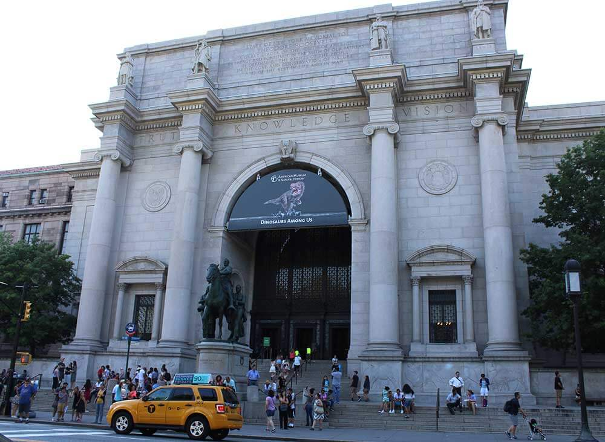
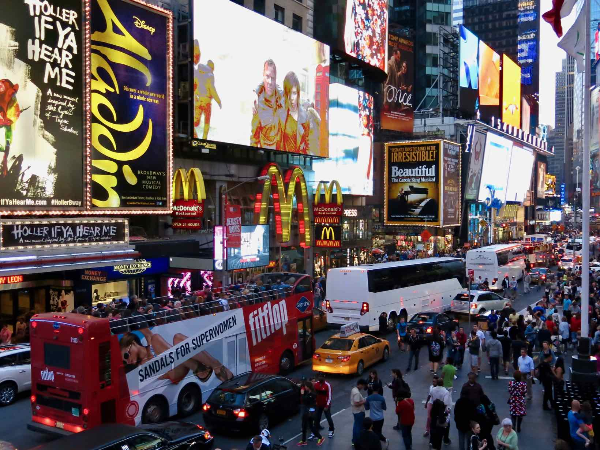
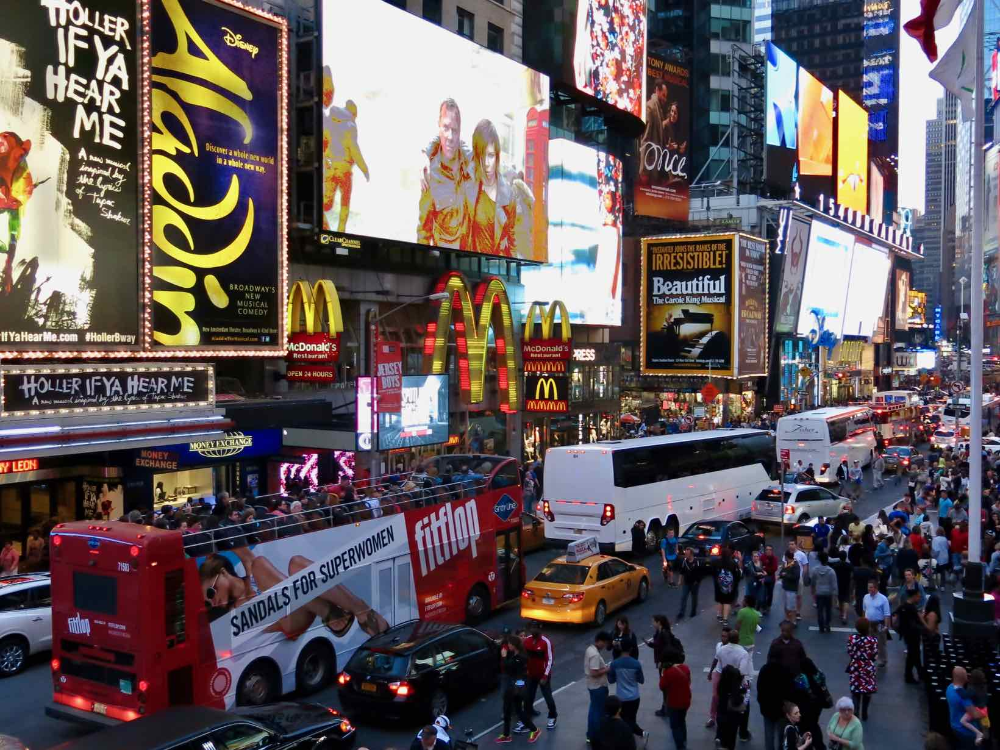
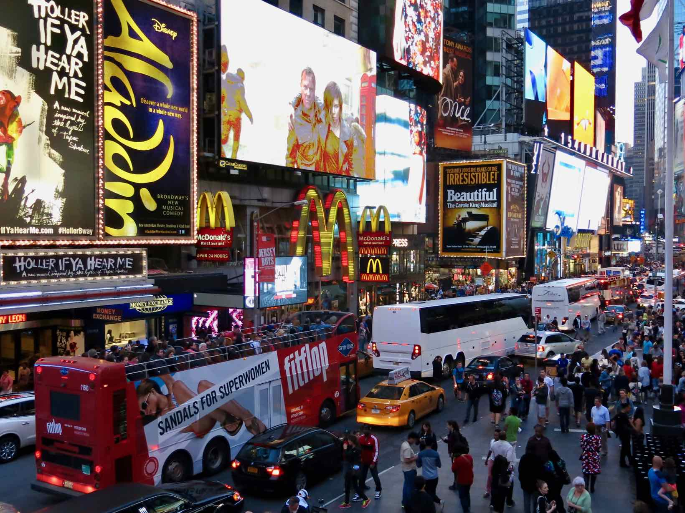
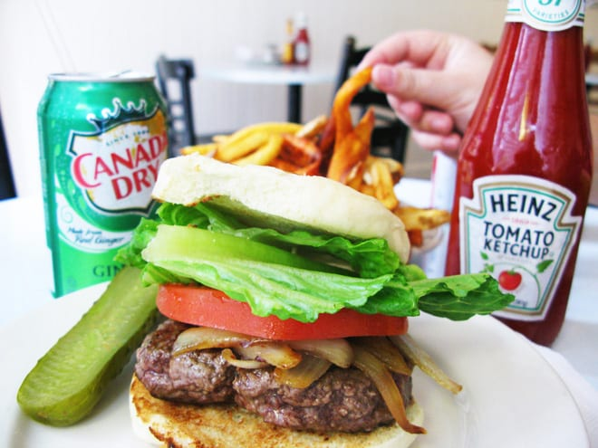
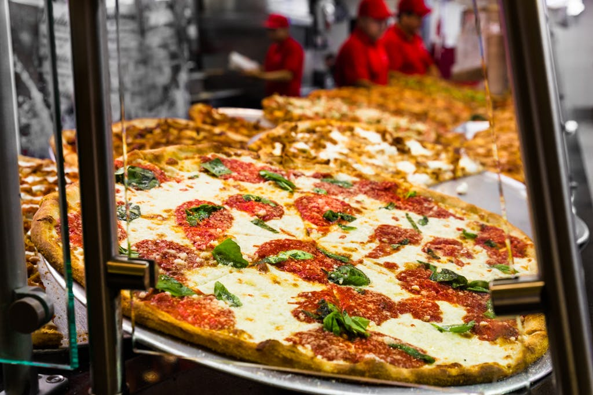
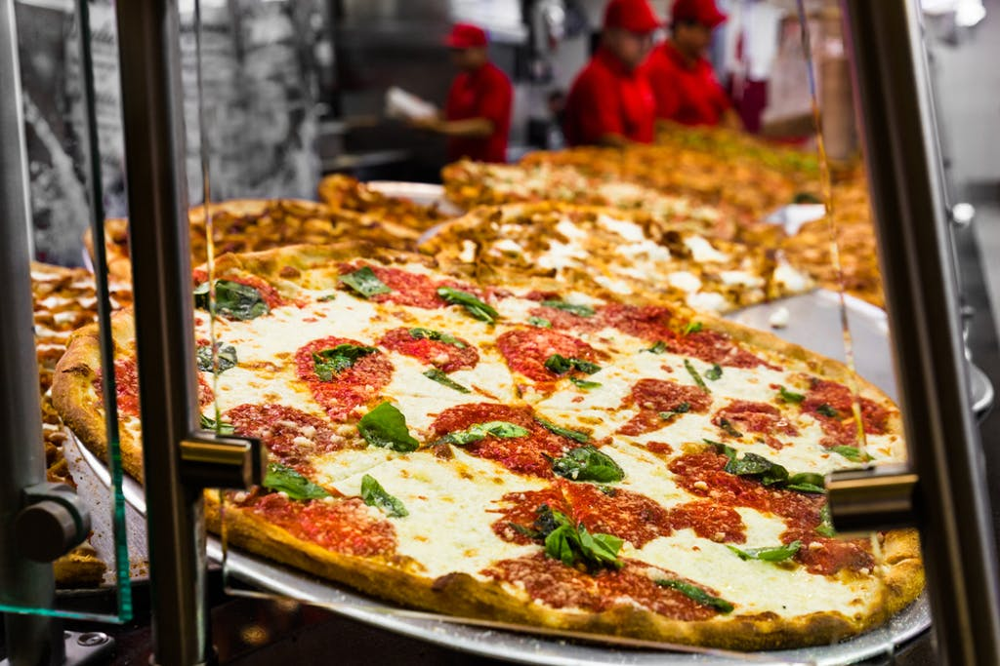
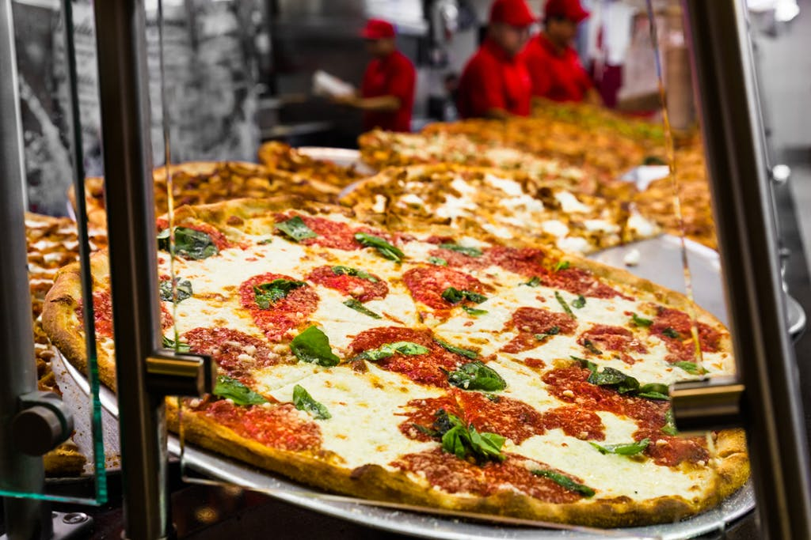

Turismo em Nova York.

 


O que esperar?
Nova York se tornou nos últimos anos e por méritos próprios a capital econômica e cultural mais importante do mundo. A cidade oferece um ambiente e um estilo de vida únicos difíceis de explicar em um guia de Nova York. Eles devem ser vividos e desfrutados! Assistir a um musical na Broadway, passar uma noite na Times Square, cruzar a Ponte do Brooklyn, ter uma tarde de compras na Quinta Avenida ou se sentir como um corretor em Wall Street, são algumas das coisas que só se pode fazer em Nova York.Times Square:O Encontro da Broadway com a Sétima Avenida, mais conhecido como Times Square, é um dos pontos mais conhecidos de Nova York e um lugar imperdível a se visitar ao menos uma vez durante a viagem. Claro que você já deve ter visto a Time Square em alguma foto, filme ou seriado; mas a sensação de estar no lugar é incrível! São tantos letreiros iluminados, tanta gente, tanta informação e ver isso tudo ao vivo é ainda mais impressionante.
Visite-a durante o dia ou durante a noite, que mesmo sem a luz solar acaba parecendo dia tamanha a iluminação dos letreiros — o importante é incluir no roteiro um dos pontos turísticos mais famosos do mundo. Para completar o programa, suba a escadaria da TKTS para tirar algumas fotos!
Paladar da Região
Muita gente se questiona o que comer em Nova York durante uma viagem à cidade americana. Por ser cosmopolita, você encontra de tudo: tem restaurante barato, caro, com comidas diferentes e muitas opções.

 


Enquanto em algumas cidades você sofre com falta de opção à mesa, em Nova York é exatamente o oposto: o difícil é escolher onde comer.
Este guia foi montado para ajudar você a encontrar seu restaurante em Nova York por região. A intenção é proporcionar o melhor aproveitamento possível do seu dia: você já fica sabendo quais são as melhores escolhas nas redondezas do seu hotel, e também quais são os restaurantes que estarão no caminho dos seus passeios.
Gostou? E que tal agendar sua viagem?
Aos brasileiros que queiram visitar Nova York ou qualquer outro destino dos Estados Unidos necessitam de passaporte válido e visto. Há alguns meses, o processo para obter o visto americano foi simplificado e passou a ser muito mais rápido.